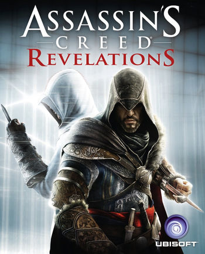

Assassin's Creed 1
7.4/10

US release: 15 November 2011 (PS3, 360), 29 November 2011 (PC), 15 November 2017 (The Ezio Collection)
UK release: 15 November 2011 (PS3, 360), 29 November 2011 (PC), 18 November 2017 (The Ezio Collection)
Plot
The hired worker that was present in the antechamber to the library mentioned to Ezio that the Templars found one of the keys beneath the Ottoman Sultan's palace, while speculating that the book held by Leandros would lead them to the others. With this in mind, Ezio set out of the fortress to take the book from Leandros, and eventually killed the Templar captain at Atlas Village after a long chase. After obtaining the book, Ezio set out for Constantinople, where the rest of the keys were hidden.By May, Ezio had arrived at Constantinople, where he met a young man before docking, and was greeted by the leader of the local guild, Yusuf Tazim, right after his arrival. Yusuf gave Ezio a tour of the city, introducing him to the guild and showing what was left of the Byzantine empire within the city. Ezio also received a Hookblade and was taught how to use it. In return, Ezio later assisted with defending and retaking some of the city's Assassin Dens from the Templars. After helping the guild recruit a few new initiates and being taught how to use bombs, Ezio went to the first location of the keys: the old trading post of Niccolo and Maffeo Polo, now a bookshop owned by Sofia Sartor, a woman whom Ezio first saw during his ferry to the city. After an introduction, Ezio found an entrance into the Yerebatan Cistern, where he found the first key along with a tome and an encrypted map that led to rare books which held the location of the other keys. Striking up a mutual agreement, Ezio made a promise with Sofia: if she helped decipher the map, he would let her borrow and print a few copies of the books.